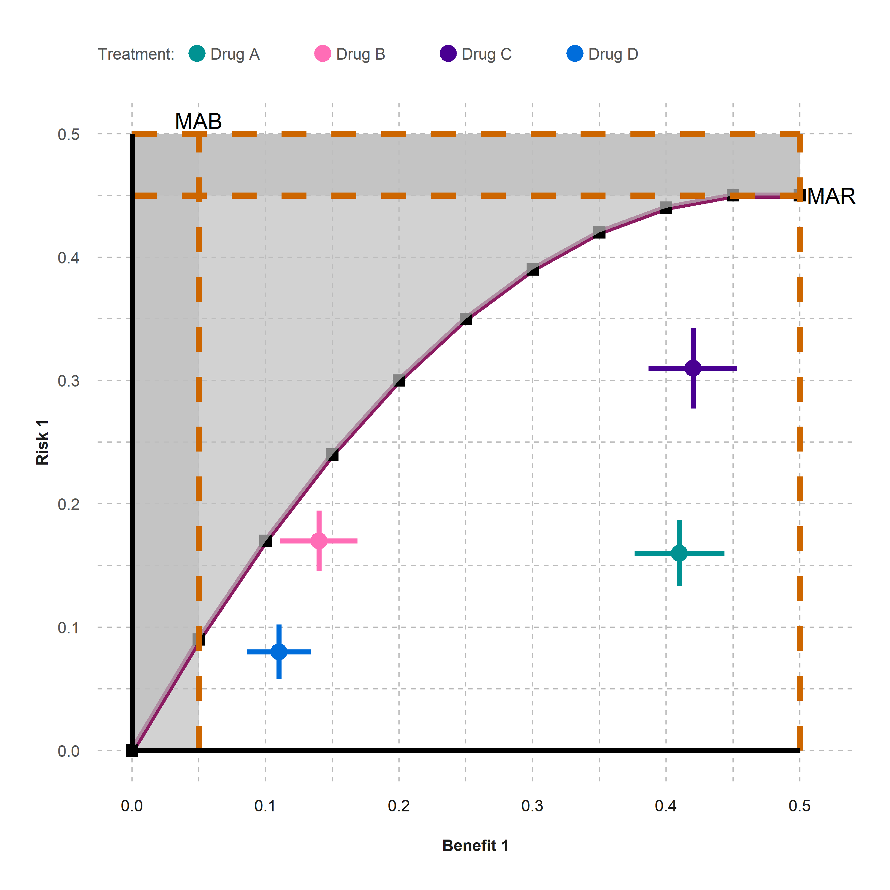
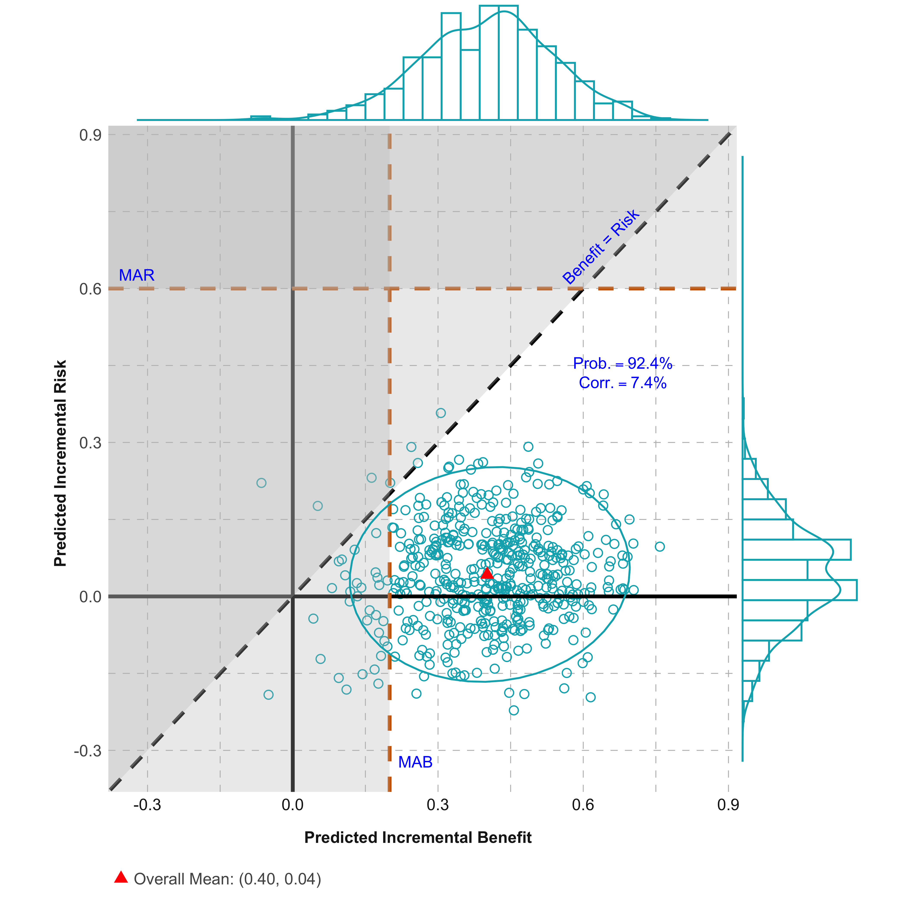
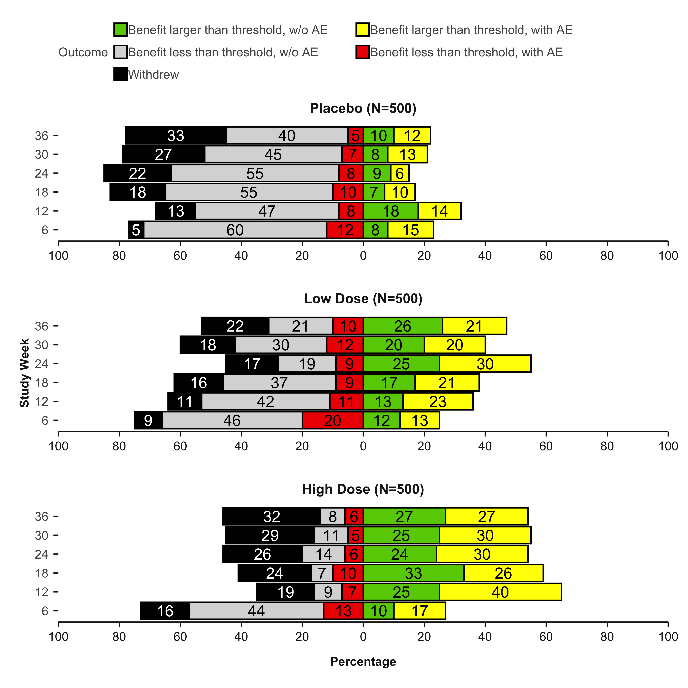
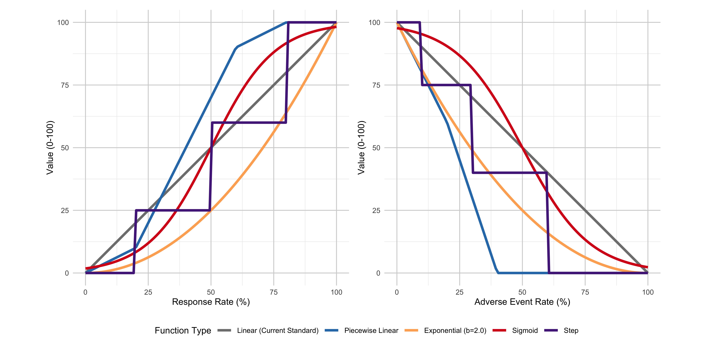
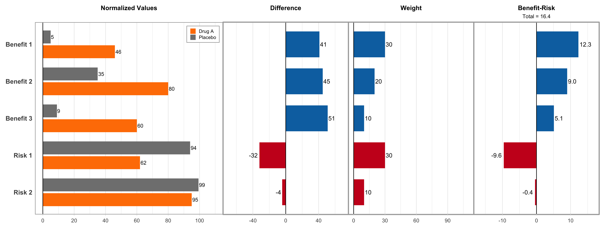
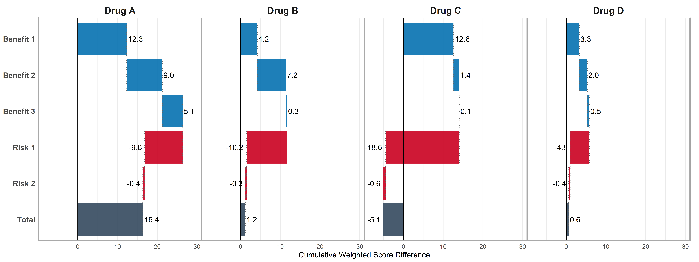
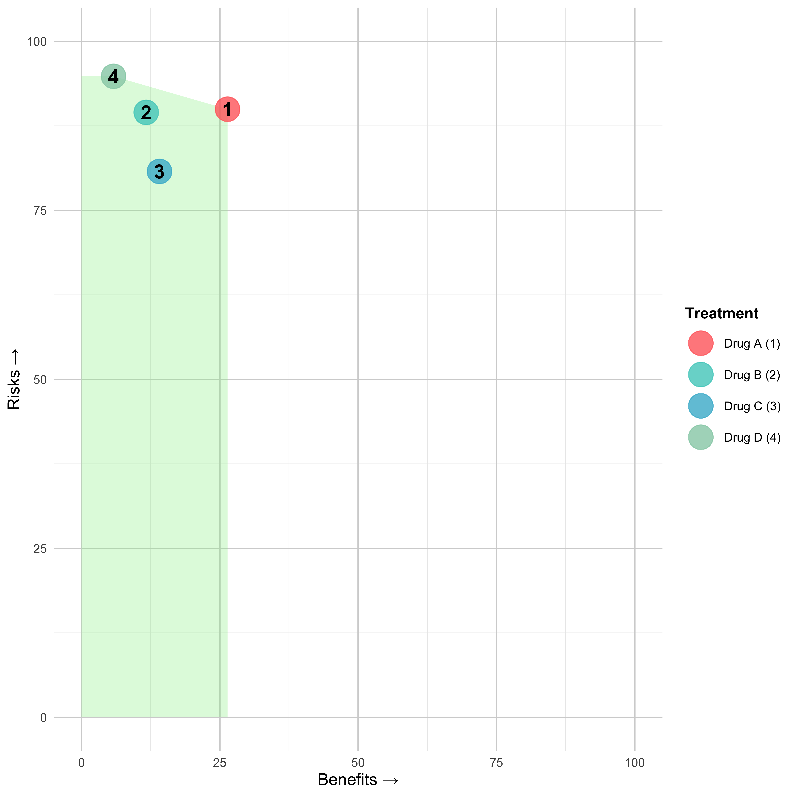
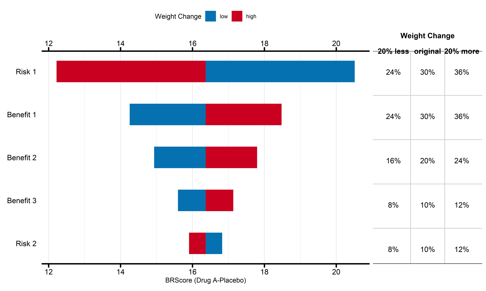

The goal of brpubVJCE is to generate benefit-risk visualizations for the publication “How to visually integrate value judgment with clinical evidence”.
Table of Contents
- Installation
- Figure - Dot-Forest Plot
- Figure - Trade-off Plot
- Figure - Correlogram
- Figure - Scatter Plot
- Figure - Divergent Stacked Bar Chart
- Figure - Cumulative Excess Plot
- Figure - Value Function Types
- Figure - MCDA Comparison Plot
- Figure - MCDA Waterfall Plot
- Figure - MCDA Benefit-Risk Map
- Figure - MCDA Tornado Plot
Installation
You can install the development version of brpubVJCE from GitHub using the following methods:
Recommended Installation
# Install using pak (recommended)
install.packages("pak")
pak::pak("BR-Visualization/brpubVJCE")Alternative Installation
# Install using remotes
install.packages("remotes")
remotes::install_github("BR-Visualization/brpubVJCE")Figure - Dot-Forest Plot

Click to learn more
Getting Help
- Documentation: Use
?create_forest_dot_plotor?prepare_forest_dot_datafor detailed function help - Issues: Report bugs at GitHub Issues
- Discussions: Join discussions at GitHub Discussions
- Contact: Reach out to the package maintainers via GitHub
Click to view sample code
# Load the package and create the plot
library(brpubVJCE)
# Prepare the data and create the visualization
result_plot <- create_forest_dot_plot(
prepare_forest_dot_data(effects_table)
)
# Display the plot
result_plotFigure - Trade-off Plot

Click to learn more
Getting Help
- Documentation: Use
?generate_tradeoff_plotfor detailed function help - Issues: Report bugs at GitHub Issues
- Discussions: Join discussions at GitHub Discussions
- Contact: Reach out to the package maintainers via GitHub
Click to view sample code
library(brpubVJCE)
effects_table_filtered <- effects_table |>
dplyr::filter(Outcome %in% c("Risk 1", "Benefit 1"))
generate_tradeoff_plot(
data = effects_table_filtered,
filter = "None",
category = "All",
benefit = "Benefit 1",
risk = "Risk 1",
type_risk = "Crude proportions",
type_graph = "Absolute risk",
ci = "Yes",
ci_method = "Calculated",
cl = 0.95,
mab = 0.05,
mar = 0.45,
threshold = "Segmented line",
ratio = 4,
b1 = 0.05, b2 = 0.1, b3 = 0.15, b4 = 0.2, b5 = 0.25,
b6 = 0.3, b7 = 0.35, b8 = 0.4, b9 = 0.45, b10 = 0.5,
r1 = 0.09, r2 = 0.17, r3 = 0.24, r4 = 0.3, r5 = 0.35,
r6 = 0.39, r7 = 0.42, r8 = 0.44, r9 = 0.45, r10 = 0.45,
testdrug = "Yes",
type_scale = "Free",
lower_x = 0, upper_x = 0.5,
lower_y = 0, upper_y = 0.5,
chartcolors = colfun()$fig7_colors
)Figure - Correlogram

Click to learn more
Getting Help
- Documentation: Use
?create_correlogramfor detailed function help - Issues: Report bugs at GitHub Issues
- Discussions: Join discussions at GitHub Discussions
- Contact: Reach out to the package maintainers via GitHub
Click to view sample code
library(brpubVJCE)
create_correlogram(corr)Figure - Scatter Plot

Click to learn more
Getting Help
- Documentation: Use
?scatter_plotfor detailed function help - Issues: Report bugs at GitHub Issues
- Discussions: Join discussions at GitHub Discussions
- Contact: Reach out to the package maintainers via GitHub
Click to view sample code
library(brpubVJCE)
outcome <- c("Benefit", "Risk")
scatter_plot(scatterplot, outcome, mab = 0.2, mar = 0.6)Figure - Divergent Stacked Bar Chart

Click to learn more
Getting Help
- Documentation: Use
?divergent_stacked_barchartfor detailed function help - Issues: Report bugs at GitHub Issues
- Discussions: Join discussions at GitHub Discussions
- Contact: Reach out to the package maintainers via GitHub
Click to view sample code
library(brpubVJCE)
divergent_stacked_barchart(
data = comp_outcome,
chartcolors = colfun()$fig12_colors,
favcat = c(
"Benefit larger than threshold, with AE",
"Benefit larger than threshold, w/o AE"
),
unfavcat = c(
"Withdrew",
"Benefit less than threshold, w/o AE",
"Benefit less than threshold, with AE"
),
ylabel = "Study Week"
)Figure - Cumulative Excess Plot

Click to learn more
Getting Help
- Documentation: Use
?gensurv_combinedfor detailed function help - Issues: Report bugs at GitHub Issues
- Discussions: Join discussions at GitHub Discussions
- Contact: Reach out to the package maintainers via GitHub
Click to view sample code
library(brpubVJCE)
gensurv_combined(
df_plot = cumexcess, subjects_pt = 100, visits_pt = 6,
df_table = cumexcess, fig_colors_pt = colfun()$fig13_colors,
rel_heights_table = c(1, 0.5),
legend_position_p = c(.1, 1.56),
titlename =
"Cumulative Excess # of Subjects w/ Events (per 100 Subjects)",
mar = 32,
mab = 15,
mcd = 22
)Figure - Value Function Types

Click to learn more
Getting Help
- Documentation: Use
?compare_value_function_typesfor detailed function help - Issues: Report bugs at GitHub Issues
- Discussions: Join discussions at GitHub Discussions
- Contact: Reach out to the package maintainers via GitHub
Click to view sample code
library(brpubVJCE)
compare_value_function_types(
benefit_name = "Efficacy",
benefit_min = 0,
benefit_max = 100,
benefit_label = "Response Rate (%)",
risk_name = "Safety",
risk_min = 0,
risk_max = 100,
risk_label = "Adverse Event Rate (%)",
power = 2,
show_titles = FALSE,
show_legend = TRUE
)Figure - MCDA Comparison Plot

Click to learn more
Getting Help
- Documentation: Use
?create_mcda_barplot_comparisonfor detailed function help - Issues: Report bugs at GitHub Issues
- Discussions: Join discussions at GitHub Discussions
- Contact: Reach out to the package maintainers via GitHub
Click to view sample code
library(brpubVJCE)
create_mcda_barplot_comparison(
data = mcda_data,
study = "Study 1",
benefit_criteria = c("Benefit 1", "Benefit 2", "Benefit 3"),
risk_criteria = c("Risk 1", "Risk 2"),
comparison_drug = "Drug A",
clinical_scales = clinical_scales,
weights = weights
)Figure - MCDA Waterfall Plot

Click to learn more
Getting Help
- Documentation: Use
?create_mcda_waterfallfor detailed function help - Issues: Report bugs at GitHub Issues
- Discussions: Join discussions at GitHub Discussions
- Contact: Reach out to the package maintainers via GitHub
Click to view sample code
library(brpubVJCE)
create_mcda_waterfall(
data = mcda_data,
comparator_name = "Placebo",
benefit_criteria = c("Benefit 1", "Benefit 2", "Benefit 3"),
risk_criteria = c("Risk 1", "Risk 2"),
weights = weights,
clinical_scales = clinical_scales
)Figure - MCDA Benefit-Risk Map

Click to learn more
Getting Help
- Documentation: Use
?create_mcda_brmapfor detailed function help - Issues: Report bugs at GitHub Issues
- Discussions: Join discussions at GitHub Discussions
- Contact: Reach out to the package maintainers via GitHub
Click to view sample code
library(brpubVJCE)
create_mcda_brmap(
data = mcda_data,
comparator_name = "Placebo",
benefit_criteria = c("Benefit 1", "Benefit 2", "Benefit 3"),
risk_criteria = c("Risk 1", "Risk 2"),
weights = weights,
clinical_scales = clinical_scales,
show_frontier = TRUE,
show_labels = TRUE
)Figure - MCDA Tornado Plot

Click to learn more
Getting Help
- Documentation: Use
?mcda_tornadofor detailed function help - Issues: Report bugs at GitHub Issues
- Discussions: Join discussions at GitHub Discussions
- Contact: Reach out to the package maintainers via GitHub
Click to view sample code
library(brpubVJCE)
mcda_tornado(
data = mcda_data |> dplyr::filter(Study == "Study 1") |> dplyr::select(-Study),
comparator_name = "Placebo",
comparison_drug = "Drug A",
weights = weights,
clinical_scales = clinical_scales
)License
This package is licensed under the MIT License. See the LICENSE file for details.
Built with ❤️ for the benefit-risk visualization community